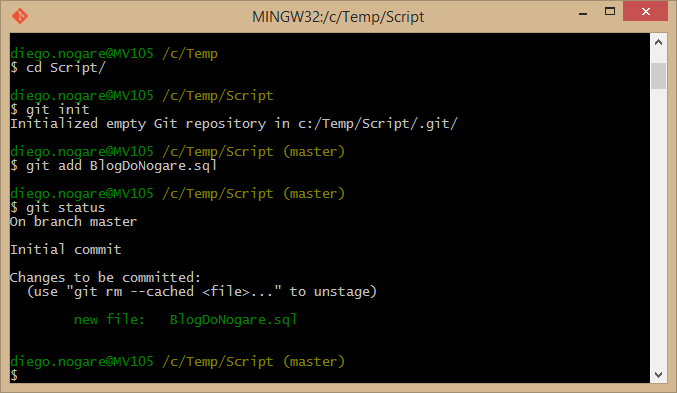

O Terminal é a interface de linha de comando no Linux, onde os usuários podem interagir diretamente com o sistema operacional através de comandos de texto.
ls: Lista os arquivos e diretórios no diretório atual.
cd: Altera o diretório atual.
mkdir: Cria um novo diretório.
rm: Remove arquivos ou diretórios.
cp: Copia arquivos ou diretórios.
mv: Move arquivos ou diretórios.
touch: Cria um arquivo vazio ou atualiza o carimbo de data/hora de um arquivo existente.
cat: Exibe o conteúdo de um arquivo.
grep: Pesquisa por padrões em arquivos ou saídas de comando.
find: Busca arquivos e diretórios no sistema de arquivos.
sudo: Executa um comando com privilégios de superusuário.
chown: Altera o proprietário de arquivos ou diretórios.
chmod: Altera as permissões de acesso de arquivos ou diretórios.
ps: Lista os processos em execução.
kill: Termina processos.
df: Exibe o espaço em disco utilizado e disponível.
du: Exibe o uso do espaço em disco de arquivos e diretórios.
tar: Cria, extrai ou compacta arquivos e diretórios em um arquivo tar.
ssh: Conecta-se a um servidor remoto via SSH (Secure Shell).
wget: Baixa arquivos da internet.

Comandos do Windows
O CMD é o local onde se pode utilizar os comandos do Windows, diferente do Linux que se utiliza o Terminal. Estes são comandos base de vários computadores
dir: Lista os arquivos e diretórios no diretório atual.
cd: Altera o diretório atual.
mkdir: Cria um novo diretório.
del: Exclui um ou mais arquivos.
copy: Copia arquivos ou diretórios.
move: Move arquivos ou diretórios.
rename: Renomeia arquivos ou diretórios.
type: Exibe o conteúdo de um arquivo.
cls: Limpa a tela do prompt de comando.
ipconfig: Exibe informações de configuração de rede.
ping: Testa a conectividade com outro computador na rede.
netstat: Exibe estatísticas de protocolo e conexões de rede.
tasklist: Lista os processos em execução.
taskkill: Encerra um ou mais processos.
shutdown: Desliga, reinicia ou faz logoff do computador.
regedit: Abre o Editor de Registro do Windows para editar o registro do sistema.
systeminfo: Exibe informações detalhadas sobre a configuração do sistema.
sfc: Verifica a integridade dos arquivos de sistema protegidos pelo Windows.
chkdsk: Verifica e repara problemas no sistema de arquivos e no disco rígido.
help: Exibe uma lista de comandos e informações de ajuda sobre comandos específicos.